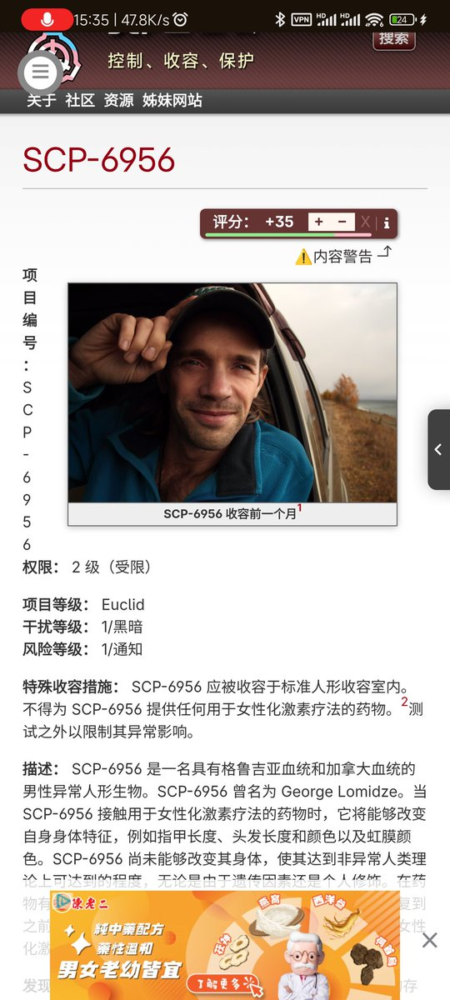

Τειρεσίας✝️
@Robert_Bumaro11
@2511ziyao 实际上中分还有mtf写手，其人事页的自我介绍可以说是颇具*推特跨圈*风格，对同为性少数的圈外读者来说她的作品很适合用来入门打破“基金会是异常物品收集/战力叠盒子”的刻板印象（？）
https://t.co/1AQSwFFuLC

free bird yeah！
@2511ziyao
本来想看fumo的打错一位数变成跨了 https://t.co/SlRGklcSSE https://t.co/gcTcvuFHga